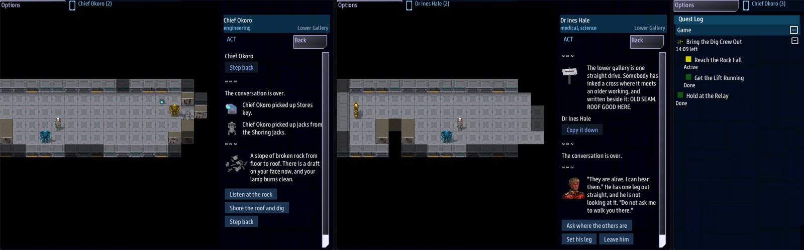

Class 3, Lecture 16 - Capstone: a long boarding mission¶
What you will have at the end¶
Your own long away mission. Three areas. A quest tree the bridge can follow. A clock that starts on the ground. Two endings. Three jobs, each with something only that person can do. Walked from the landing to each ending, with your sheet of checks beside it.
This lecture teaches no new word. It is a method, and one finished example to hold
yours against. The example is mine: Corvin's Claim, a mine with four diggers sealed
behind a rock fall. It is in example\, whole. Read mine, and then write yours.
Mine is small on purpose: 19 rooms on three small maps, so that you can read all of it in one sitting. By Lecture 14's guess it plays in about twenty minutes. A mission of forty-five wants about twice the rooms, and the same skeleton.

Chief Okoro at the rock fall (left), Dr Hale with Jo Reth in the Lower Gallery (middle), and the Quest Log aboard (right), with the time left under Bring the Dig Crew Out.The video¶
About 6 minutes. Subtitles are available in the player.
Before you start¶
- You have finished Lecture 14, and you have its sheet: the game's numbers, three lists and three columns. If you have taken Lecture 15, a ship the crew boards can be one more place in your mission. It is a party of its own, not one of your three areas. Nothing here depends on it.
- A new sheet of paper, and a pencil.
- The internet, once, to make the mission.
Make a new mission for it, the way you made MyAway. Use your own name and title.
Mine was:
That gives you the Kesh Relay starter again. You will keep four of its files as they
are, delete its map, and write over its mission.amd. Why a new mission and not more
rooms in MyAway: a capstone is yours from the first line, and starting from the
starter shows you how little of it you have to keep.
Those two commands were not run to write this page. The start files here are the
starter as Lecture 7 gave it to you, with the title changed where sbs create changes
it.
Step 1 - Three sentences¶
The same three as Lecture 6. Write them before anything else.
| Sentence | Mine |
|---|---|
| The question the mission asks | Why has Corvin's Claim stopped answering, and where is its dig crew? |
| The answer, which the party finds in pieces | The lower gallery roof fell nine hours ago. Four diggers are sealed behind it, the fans have stopped, and a runaway hauler tore the lift's power out |
| The choice the party makes at the end | Dig them out and keep the mine, or blast them out and lose it |
The third sentence is your two endings. Both of mine save the diggers. What differs is the cost, and who is able to pay it.
Step 2 - The beat sheet, with times¶
Take the forty-five minute sheet from Lecture 14 and fill it in. This is mine, at its smaller size:
| Beat | My guess, in minutes | What is there |
|---|---|---|
| The landing, and the first person | 3 | Ada Corvin, by her radio. Her first answer starts the clock |
| Three tracks | 8 | The stores, the hauler and the lift, the ventilator |
| The join | 3 | The lift. Everybody goes down together |
| The last area | 4 | Jo Reth, and the rock fall |
| The ending | 2 | One room, two ways through it |
And how much of everything, counted on the finished files:
| What | Mine | For forty-five minutes |
|---|---|---|
| Areas | 3 | 3 or 4 |
| Rooms | 19 | About 40 |
| Choices | 36 | About 80 |
| Words in the lines | 624 | About 1,300 |
| A choice, middle length | 14 characters | Under 35 |
| The longest line | 39 words | Under 40 |
| Props | 12 | 20 to 25 |
| People | 2, and 1 hostile | 4 or 5, and 2 hostiles |
| Side stories | 3 | One for each seat on your roster |
| Facts | 4 | 5 or 6 |
The right-hand column is twice mine, and it is a plan, not a measurement.
Step 3 - Three areas¶
Draw the areas in a row, with what joins them. Mine is three boxes: the camp, a walk east to the lift house, and the lift down to the gallery.
Three decisions go with the drawing. Each is one line in a map file.
| Area | known: |
beam: |
Why |
|---|---|---|---|
camp, Corvin's Claim |
yes | yes | The party lands here |
works, Lift House |
no | yes | It has to be found once. After that the ship can put you there |
gallery, Lower Gallery |
no | no | The lift is the only way down. That is what makes the lift matter |
Here is the middle map, whole. The other two are in example\ground.
area: works
title: Lift House
tileset: starter
entry: works_gate
known: no
size: 24x11
legend:
.: dust
,: scrub
#: rock
^: cliff
_: floor
W: wall
a: dust @works_gate
<: dust @to_camp
d: floor
G: floor @lift_gate
v: floor @to_gallery
---
^^^^^^^^^^^^^^^^^^^^^^^^
^##........WWWWWWWWW##^^
^#.........W_______W.#^^
^..........W_______W##^^
^<a........d_______GvW^^
^..........W_______W##^^
^#.........W_______W.#^^
^#..,,.....WWWWWWWWW.#^^
^##.,,..............##^^
^^###...........#####^^^
^^^^^^^^^^^^^^^^^^^^^^^^
Read it with Lecture 13 in mind. Every mark is the name of a place: works_gate,
lift_gate. The titles read well after Go to. Nothing hidden stands on a mark. And
the ways out are named to_ and the area's key, so no exits: block is needed.
I used the starter's starter.tileset as it came. It has no water. If you want a kind
of ground it does not have, add the line you added in Lecture 10.
Step 4 - Three tracks, a join, and three people nobody can replace¶
Draw Lecture 14's three columns before you write a single prop.
| Where | Dr Hale | Lt Reyes | Chief Okoro |
|---|---|---|---|
| The camp | Ada Corvin: what happened, the lift, the stores. The gallery plan | The stores key, the stores, the jacks | Walks east |
| The lift house | The hauler. Its coupling. The lift console | The ventilator | |
| The join | Down in the lift | Down in the lift | Down in the lift |
| The gallery | Jo Reth: sets his leg | Hands the jacks over | The rock fall: listens, shores, digs |
Played that way by script, the presses were 9, 2 and 7. Lt Reyes does his work with his hands and his feet, not with answers, and that is a fair track too. The coupling is on the ore hauler, so his track includes a shot: Step 11 says where to stand for it.
Now the three things only one person can do. On the ground there are two ways to write one, and neither is covered by anybody else:
| Who | The thing | How it is written |
|---|---|---|
| The medic | Set Jo Reth's leg. He tells her where the fall is thin | if skill medical >= 3 on the answer |
| The engineer | Start the ventilator | Needs: engineering on the panel |
| The guard | Shape the charges so the roof stays up | if skill security >= 3 on the answer |
The medic's answer, from Jo Reth's scene:
Do not write these with a job, if medical. Lecture 13 measured why: a job is covered
by whoever is in the scene, so it is never one person's.
And now the rule that keeps your mission fair. A thing only one person can do must never be the only road. A crew with no medic, no engineer and no guard still has to reach an ending. So build it like this:
| Road | Needs | Who can walk it |
|---|---|---|
| Blast them out | The charges from the stores | Anyone. Lt Ross did it alone |
| Dig them out | Four facts and the jacks: what Ada said, the plan, the thin place, the air | A party with a medic and an engineer |
| Dig them out, the short way | The charges, shaped | A party with the guard |
The cheap ending is open to everybody. The good ending has two doors, and each needs somebody. That is three jobs with something only they can do, and nobody locked out.
Step 5 - The quest tree is the bridge's window¶
Lecture 13 showed what the bridge gets: who went down, the shared quests, and nothing else. So write the shared quests as the story the bridge will follow. One arc, and a step for each thing worth calling up to the ship.
### [Bring the Dig Crew Out](rescue)
---
Arc
Scope: shared
Starts when: revealed
Fails when: 25 minutes
Lose: The air in the lower gallery ran out before anybody reached them.
---
Four diggers are sealed in behind a rock fall, and their air is going.
| Who | Where |
|---|---|
| Four diggers | Behind the fall, at the end of the lower gallery |
| Jo Reth | This side of the fall. He crawled out |
| Ada Corvin | Her hut in the camp, by the radio |
 Half an hour of air when the roof came down, by Ada Corvin's count. Less, now.
#### [Get the Lift Running](power)
---
Scope: shared
Starts when: revealed
Objective: Find the lift's coupling and fit it
Done when: signal lift_running
Then: reveal rescue/reach
Leads to: lift_console
---
The only way down is the lift, and the lift is dead.
#### [Reach the Rock Fall](reach)
---
Scope: shared
Starts when: revealed
Objective: Go down to the lower gallery
Done when: signal fall_reached
Leads to: rock_fall
---
They are behind it. Find out how thick it is.
#### [Dig Them Out](dig)
---
Scope: shared
Starts when: revealed
Objective: Open the fall and keep the roof up
Win: All four walk out, and Corvin's Claim opens again in the morning.
---
The slow way, or the clever one. The gallery stands.
#### [Blast Them Out](blast)
---
Scope: shared
Starts when: revealed
Objective: Bring the fall down with quarry charges
Win: All four walk out. Behind them the lower gallery comes down for good.
---
The fast way. It costs Ada Corvin her mine.
You know every field. Five things are worth a second look.
The clock starts from an answer. The arc says Starts when: revealed, and Ada
Corvin's first answer starts it:
- [Ask what happened](corvin_fall) if learned told < 1 ; accepts rescue, accepts rescue/power, learn told
Before that answer the ship's quest list held one line, Hold at the Relay, Done.
After it, in the game:
Where a quest shows its state, the arc shows the time it has left. It starts at about
twenty-five minutes, the arc's Fails when:. Ada's "half an hour" is the story's words;
the clock is the arc's. So a crew that takes five minutes to choose consoles loses none of its twenty-five.
if learned told < 1 takes the answer away once it has been given, so the clock cannot
be started twice.
A step is news. When the lift ran, the bridge's list changed by itself:
Bring the Dig Crew Out
(the time left)
Reach the Rock Fall
Active
Get the Lift Running
Done
Hold at the Relay
Done
What the time reads by then depends on how long your crew took to get the lift running.
Each signal a scene sends, lift_running and then fall_reached, moves the tree. Put
a step wherever the bridge would want to say something.
The endings are the last two steps. Each has a Win: line, and each waits. An
answer at the rock fall completes one, by its path: ; completes rescue/dig.
The endings keep the clock alive. My first draft had the two endings as quests of their own, outside the arc. Played, the arc finished the moment its two steps were done, and the clock stopped with it: the party stood at the rock fall with all the time in the world. With the endings inside the arc, and waiting, the arc cannot finish early. Played again, the list at the rock fall still showed the time left, with both steps done.
The arc's description is the bridge's briefing. Select the arc in the Quest Log and its description is shown above the checklist of its steps. Whoever stayed aboard never hears Ada Corvin, so the arc carries what she said: who is where, in a table, and the air she counted, on an hourglass line. Keep each step's own description to a sentence or two. The step's heading and objective are what changes as the party works.
Step 6 - Two endings in one room¶
The rock fall is one prop with one scene. Here is the room that decides:
### [The Rock Fall](fall)
%{learned air < 1} A slope of broken rock from floor to roof. The air is thick here, and your lamp burns low.
%{learned air} A slope of broken rock from floor to roof. There is a draft on your face now, and your lamp burns clean.
- [Listen at the rock](fall_listen) ; signal fall_reached
- [Shore the roof and dig](fall_shore) if learned >= 4
- [Set the charges](fall_charges) if holding charges ; take charges
- [Step back]()
A choice has one condition. The dig needs two things, the facts and the jacks. So it
takes two rooms: the first asks if learned >= 4, and the room it leads to asks if
holding jacks. The charges work the same way: the first room takes them, and the next
offers the plain way to anyone and the shaped way to the guard.
### [Four Charges](fall_charges)
% Quarry charges: all push and no manners. Set as they are, they will open the fall and bring the roof down behind it.
- [Fire them as they are](fall_blast)
- [Shape them to spare the roof](fall_shaped) if skill security >= 3
- [Pack them up again](fall) ; give charges
Pack them up again gives the charges back. An answer that takes something should
have a way to change your mind, unless it is the last one.
Each last room has one answer with empty brackets, as in Lecture 12:
Step 7 - The card¶
Open story.mast. Change two words on the last card: the title, and the area the party
lands in.
boarding_visit(party_ship, boarding_ground_scenes(), title="Corvin's Claim", area="camp", stories=amd_section(MISSION_DOC, "side_stories"))
That is all the MAST in this mission. The ship still holds at Kesh Relay, the station the starter puts in space, and the starter's first quest still opens the party. My claim is on the rock below it. If your story needs the station to have another name, that is a line of MAST this class has not taught, and it can wait.
Then delete ground\landing.tiles. It is the starter's yard, and your mission has no
use for it.
Step 8 - What a FULL shot does¶
One fact about the game belongs in every plan.
A shot never removes a prop. A FULL shot from the Fire app at a door, a terminal or
the thing that holds your ending leaves it where it was, and as shut as it was. The only
prop a shot opens is one whose Opens with: lists cut. On Corvin's Claim:
| The shot | What happens |
|---|---|
| The lift gate, which only a signal opens | It stays shut. Nobody walks into the lower gallery until the lift runs |
The stores door, whose Opens with: lists cut |
It opens, as the key would |
| The rock fall, which holds both endings | It stays. Both endings are still there |
Played in the game, a FULL shot at the lift gate left it shut, and left no note
anywhere: Look's last line was still the one from before the shot, Picked up coupling.
A shot at a door says nothing, the same as a shot at a hostile. Watch the map.
So there is one question to ask of your own mission, with a pencil: which doors should
the crew be able to force? Put cut on those, and only those. A door without it is a
door the party cannot shoot its way through, so a prop is safe to hang an ending on.
Step 9 - One sheet of checks¶
Lint reads your spelling. It does not walk your map, weigh your packs or read your screen. These are the checks of Lectures 6, 10, 12, 13 and 14 in one list. Do them in this order, and write the result of each on your sheet.
| # | Check | How |
|---|---|---|
| 1 | Every room has a way out | Under each heading, an answer with no if and no check |
| 2 | Every room has a way in | Its key is in round brackets somewhere, or after else, or on a Scene: or Talk scene: line |
| 3 | Every key joins | For each key, holding, party, take, give: put a finger on the Item: line that spells it the same way |
| 4 | Every name after a ground word joins | For each open, reveal, calm, rouse, dismiss, summon: a finger on the record with that key |
| 5 | Every signal has two ends | For each Opens with: signal, Hidden until: and Done when: signal: the answer that sends it |
| 6 | Every area, item and ending, and who | Lecture 14's three lists |
| 7 | The worst party can finish | Cross out every if skill, every check, every Needs:. Walk to an ending with what is left |
| 8 | Nothing only one person can do is on the only road | For each thing you crossed out in 7: name the other road |
| 9 | Three columns | Lecture 14's sheet. Nobody is watching for more than one beat |
| 10 | The screen reads well | Lecture 13: marks, titles after Go to, headings after picked up, item keys, Scan: lines, and the arc's description read as the bridge reads it |
| 11 | A FULL shot | Step 8's question: which doors list cut, and should they? |
| 12 | The clock | It starts from an answer. Lose: is true every way the arc can fail |
Mine, checked this way:
| # | Mine |
|---|---|
| 1 | 19 headings, 19 ticks |
| 2 | 6 rooms are opened by a prop or a person, 13 by an answer |
| 3 | stores_key on the pickup and the door. charges, jacks and coupling on a pickup or a Drops: line, and on the answers that ask for them |
| 4 | One: reveal stores_key, and the prop's key is stores_key |
| 5 | lift_running: the gate and a step wait, The Drum Turns sends. fall_reached, air_moving, reth_treated: each has one sender. stores_key_shown is never sent, on purpose: the answer reveals the key by name |
| 6 | Three areas. Four items. Three winning answers and the clock |
| 7 | Ada, the key, the charges, the hauler (one FULL shot from the works gate), the coupling, the lift, the fall: Lt Ross alone, 12 presses |
| 8 | The leg and the ventilator: the charges go round both. The shaped charge: the plain one |
| 9 | Presses 9, 2 and 7. Chief Okoro walks while Dr Hale talks. Fair |
| 10 | Read. Blasting charges is in the pack as charges: I let it stand |
| 11 | Only the stores door lists cut: a party that forces it is a party in a hurry. The lift gate and the rock fall stay whatever is fired at them |
| 12 | It starts from Ada's first answer. One Lose:, and one way to fail |
Step 10 - Check it¶
Each row was tried on the finished files, one change at a time.
| The mistake | What lint says |
|---|---|
A last answer names rescue/blst |
never-revealed, on Blast Them Out: no answer names it |
| Both last answers complete the same step | never-revealed, on the other one |
Then: reveal rescue/reech |
dangling-reveal, and never-revealed on the step that waits |
The first step waits, and the answer does not accepts it |
never-revealed |
The lift's answer sends lift_runing |
unfired-signal on the step, signal-no-route on the answer |
For: medic |
for-nobody |
The way down is marked @to_galery |
tiles-exit: there is no area galery |
One of them, as lint printed it:
[WARNING] line 102:14: `power` Then reveals `rescue/reech`, and no record has that key, so nothing is revealed (dangling-reveal)
What lint cannot see¶
All of these lint clean. None was played for this page: each is a check on the sheet.
| The mistake | The check that finds it |
|---|---|
The dig asks for learned >= 5, and there are four facts |
6 |
The door asks for key stores_keys |
3 |
Needs: enginering |
7: nobody at all can use the panel |
| The clock taken off the arc | 11 and 12 |
The Lose: line taken off the arc |
12 |
An ending step that says Starts when: at once |
12: read the ship's quest list in the first minute |
area="camps" on the card |
Lecture 7: no Boarding Party tile |
Step 11 - Walk it end to end¶
Lint is clean and the sheet is full. Now walk it, every road.
Mine was walked by script, on stand-in consoles. A script does not read, so the times are Lecture 14's floors.
| The walk | Who | Walking and waiting | Presses | It ended with |
|---|---|---|---|---|
| Dig them out | Dr Hale, Lt Reyes, Chief Okoro | 44 seconds | 18 | All four walk out, and Corvin's Claim opens again in the morning. |
| Blast them out | Lt Ross, alone | 33 seconds | 12 | All four walk out. Behind them the lower gallery comes down for good. |
| The shaped charge | Lt Reyes, put at the fall with the charges | 3 | The first sentence again | |
| The clock | Lt Reyes, with the clock set to 40 seconds | The air in the lower gallery ran out before anybody reached them. |
The hauler, and the coupling. Every road goes through the lift, and the lift needs
the coupling the ore hauler is dragging. The coupling is the hauler's Drops:, so
somebody has to stop it. It walks a square in front of the lift house, cell 7, 2 to
10, 2 to 10, 6 to 7, 6 and back, and with Notice: 3 it notices anybody within three
cells. The works gate, where you arrive, is cell 2, 4: five cells from the nearest side
of that square, so outside its Notice, and inside a shot's six. So:
- Stand on the works gate. Do not walk into the yard.
- Open Fire, pick FULL, press Arm.
- Watch the hauler come up the west side of its square, from 7, 6 toward 7, 2. Click the cell it has just stepped onto.
One FULL shot downs it, whatever its HP, and it leaves the coupling where it fell. Walk
over and pick it up: Act reads Chief Okoro picked up coupling. (or your own crew
member's name). Expect to miss. A shot goes to the cell you clicked, and a hostile that
is walking may have left it by then. Nothing on the handheld tells you that a shot
missed, or that it hit, or that it killed: the Fire app goes back to SAFE either way.
Watch the map, arm again, and wait for it to come round.
Then I played it in the real game: the dig, with Dr Hale and Chief Okoro, and the
blast, with Dr Hale alone and no skill used. Both reached their Win: sentence on the
server's last screen. Dr Hale alone took about ten minutes of game time. The dig took
twenty-five, with Chief Okoro beaming up between beats to read the bridge's quest list
for this page. Note what is in the pack as you go: it lists items by their key, jacks x1,
stores key x1, charges x1. Act names a pickup by the prop's heading: picked up
Stores key., picked up Shoring jacks., picked up Blasting charges.. So the jacks are
Shoring jacks in Act and jacks x1 in the pack: two names for one thing, the pair
Lecture 13 asks you to choose together.
By Lecture 14's guess, half a minute a press and doubled for a first play, the busiest console in the first walk has nine presses: nine minutes of reading, and a first play of about twenty. I set the clock to twenty-five. Nobody has timed real people on it.
Walk yours the same way, with people: each ending once, then the smallest party you can imagine, then the clock.
The rubric¶
Your capstone is done when you can tick every line.
| # | The mission has | How you know |
|---|---|---|
| 1 | Three areas, one that has to be found and one the ship cannot beam into | known: no and beam: no in two map files |
| 2 | A quest tree: an arc, steps that reveal each other, and the endings as its last steps | The ship's quest list changes at least three times in a play |
| 3 | Two endings, each with its own Win: sentence, and a way to lose |
You have read all three last screens |
| 4 | Three jobs, each with one thing nobody else can do | Three lines with if skill or Needs:, and check 8 for each |
| 5 | A clock that starts on the ground | The time appears after an answer, not before |
| 6 | An ending for the smallest party | One person, with no skill used, has finished it |
| 7 | Work for three at once | The three columns, and no column with half the presses |
| 8 | A screen that reads well | Lecture 13's list, done on the handheld, not in the file |
| 9 | An answer to a FULL shot | Step 8's question, written down for every door |
| 10 | A clean lint, and a full sheet | clean, and twelve results in your own hand |
If something goes wrong¶
| What you see | Why | What to do |
|---|---|---|
| The time stops when the party reaches the last area | The arc finished: every step it has is done | Put the endings inside the arc, as steps that wait. Step 5 |
| The time is running before anybody has landed | The arc says Starts when: at once |
Starts when: revealed, and accepts on the first answer |
| A lead is on the Tasks app before anybody has been told anything | A step says Starts when: at once inside an arc that waits |
Make the step wait too, and accepts it with the arc |
| The last answer is pressed and the game goes on | The step it completes has no Win: line |
Give each ending step its own Win: sentence |
| A choice is offered to nobody | It has two conditions. A choice has one | Two rooms. Step 6 |
| A door opened to a shot that should not have | Its Opens with: lists cut |
Take cut off it. Step 8 |
| No Boarding Party tile, and lint is clean | area= on the card names no area |
Step 7 |
Exercise¶
This is the exercise: write yours.
- Three sentences. A beat sheet with minutes. Do not open VS Code yet.
- Draw three areas and what joins them. Decide
known:andbeam:for each. - Draw three columns, and fill them until nobody is watching.
- Name the thing each of three jobs can do that nobody else can. Then name the road that goes round it.
- Write the quest tree first, then the maps, then the props and people, then the scenes. Run lint after each.
- Give every seat on your roster a side story. Mine has three for five seats. Do better than mine.
- Do the twelve checks, on paper.
- Break it on purpose three times: one item key, one fact too many, the clock taken
off. Lint will say
cleaneach time. Find each with the check that catches it. - Walk every ending with people, and time it. Put your times on the beat sheet beside your guesses.
Checkpoint¶
You are done when every line of the rubric has a tick, and somebody who did not write the mission has played it to an ending without asking you anything.
Next¶
That is the end of Boarding Parties. Class 4 takes the same crew out of the airlock in suits, into a ruin with no floor.
Further reading¶
example\mission.amd, top to bottom. It has a note above each section, as the starter does.- "Boarding parties" and "Ground tile maps" in the library documentation, for the field lists.
- Dawnline's
scenes.amdandworld.amd, if you have them: the same skeleton at three times the size, with a clock of forty minutes.
Download this lecture's finished files (a zip of its example folder).